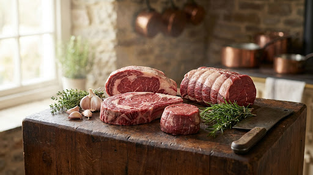
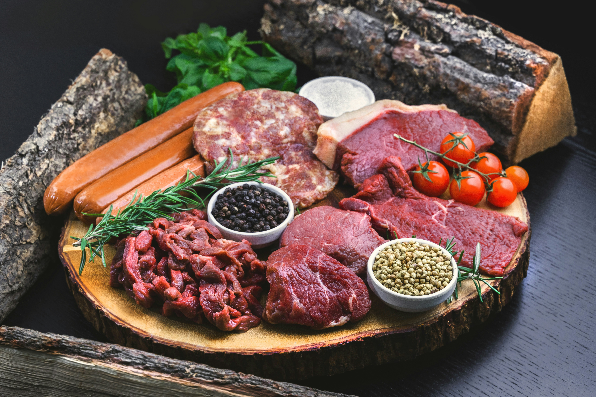
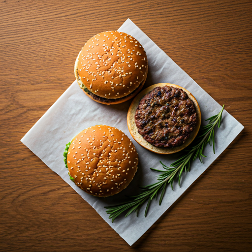
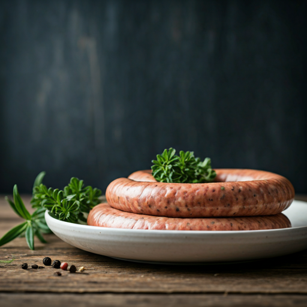
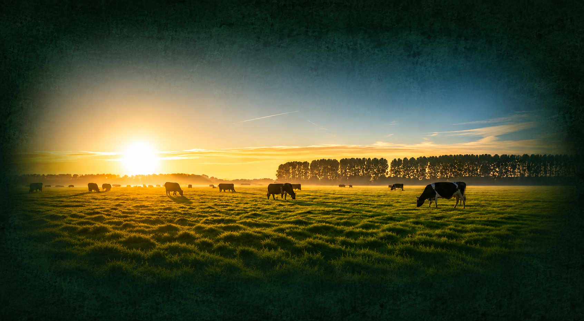
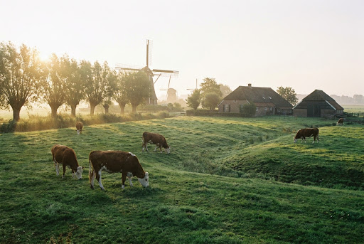
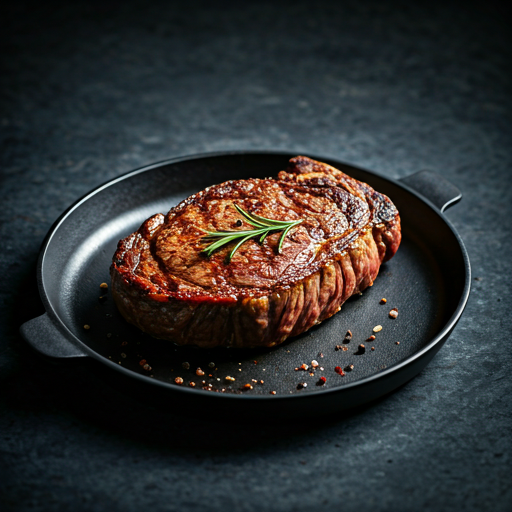

Wij verkopen vlees van onze eigen koeien. Puur, eerlijk en zonder kunstmatige toevoegingen. Onze koeien lopen zoveel mogelijk buiten, wat zorgt voor een rijke smaak en uitstekende kwaliteit.
Bekijk ons assortiment
Het meeste vlees wordt diepgevroren verkocht en verpakt per 3–4 ons. Versheid en kwaliteit gegarandeerd.



We kennen elke koe bij naam. Ze groeien rustig op in onze eigen polderweiden voor het beste resultaat.
Ons vlees bevat geen kunstmatige toevoegingen. Gewoon eerlijk vlees, zoals het bedoeld is.
Elk stuk vlees wordt met zorg en vakmanschap verwerkt en verpakt voor optimale smaakbeleving.


Onze koeien brengen zoveel mogelijk tijd buiten door in de weide. Ze grazen van het malse poldergras en genieten van de ruimte. Hierdoor ontstaat vlees met een volle smaak en een uitstekende kwaliteit die u direct proeft aan de eettafel.

Ontdek ons assortiment ambachtelijk vlees in onze boerderijwinkel. Heeft u specifieke wensen of wilt u een grotere bestelling plaatsen? Wij helpen u graag.